This article was created with AI (Claude 3.7 Sonnet) and partially edited by me lol 🍜✨
I ate here in November 2024 😄 This time I visited “Sunagawa Seimenjo” in American Village in Mihama, Chatan Town. Being a spot popular with tourists, not only locals but also many tourists were visiting the shop.
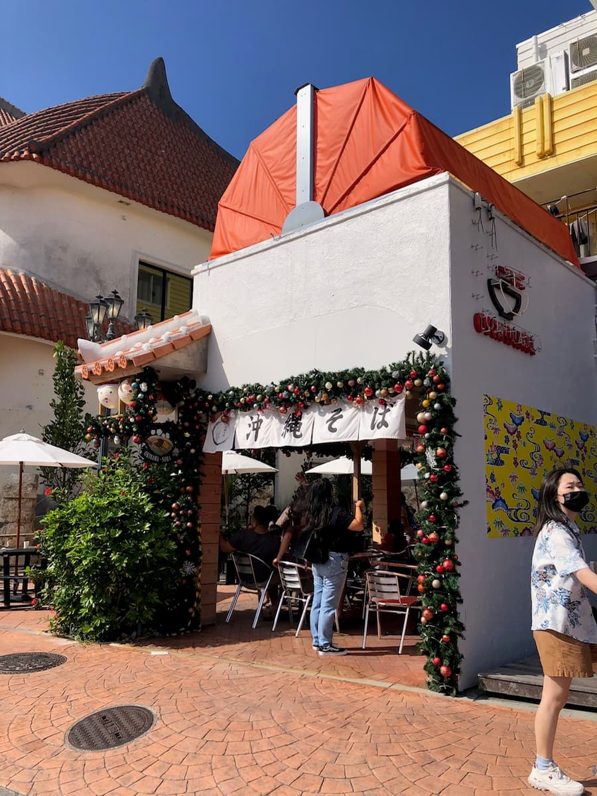
The shop's exterior has a stylish feel, and photos of the signature menu items were displayed near the entrance. Just looking at that sign conveys that the soup seems good 😊
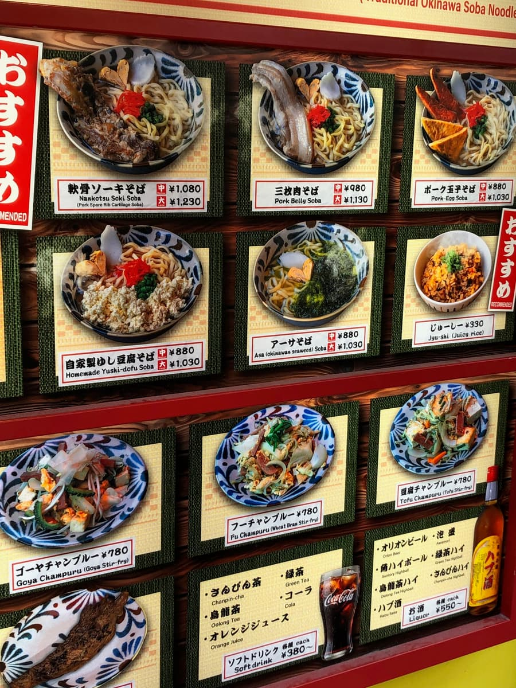
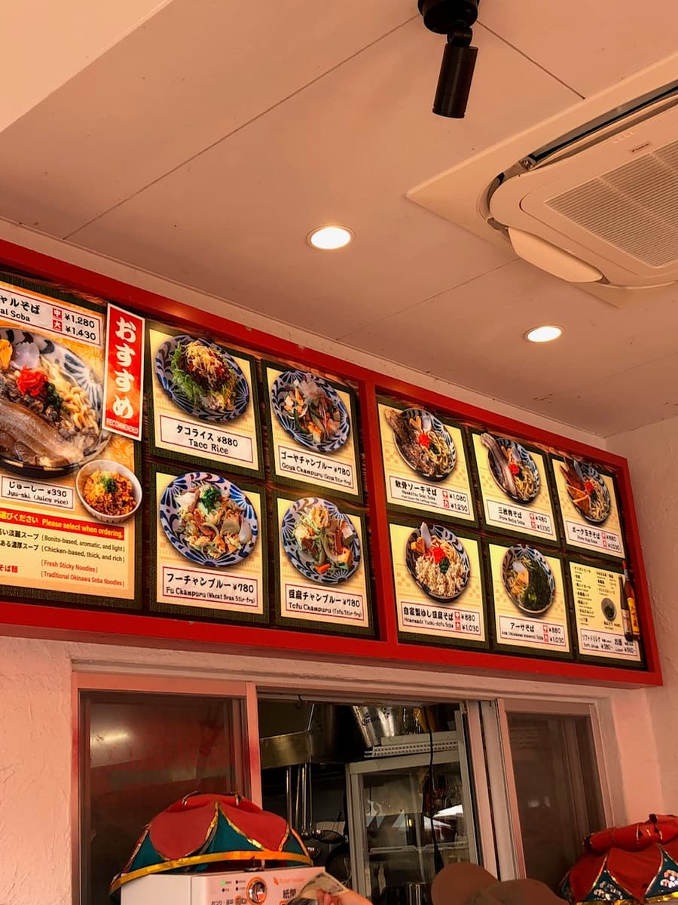
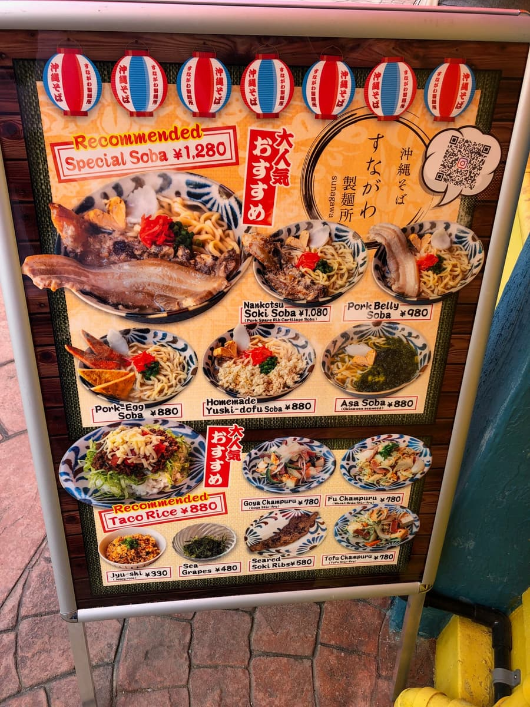
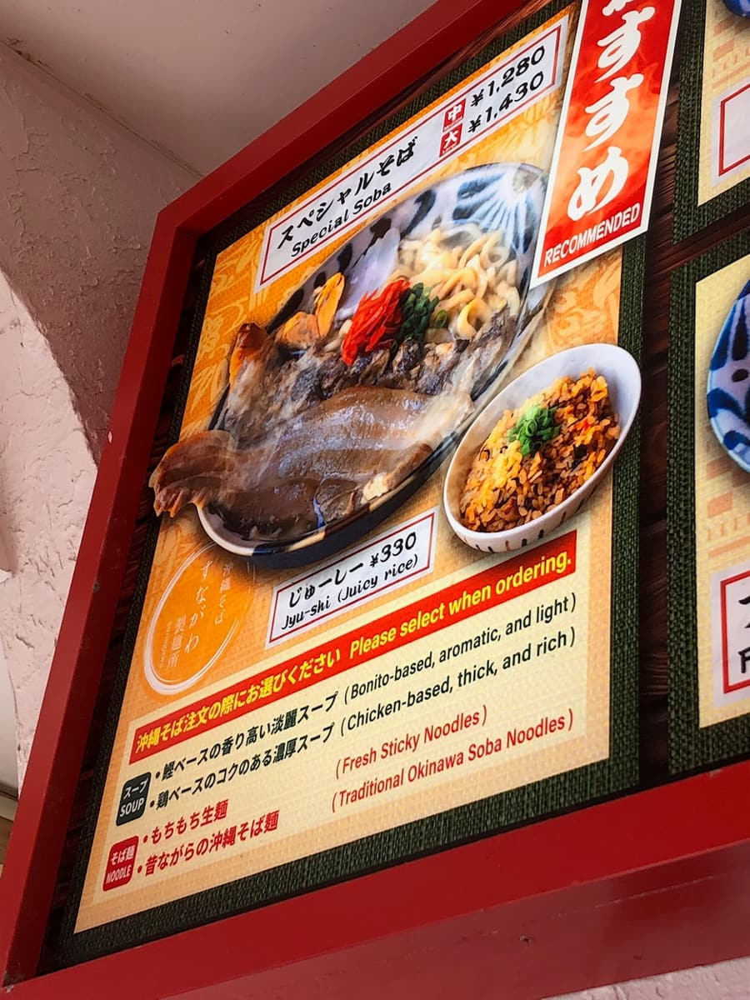
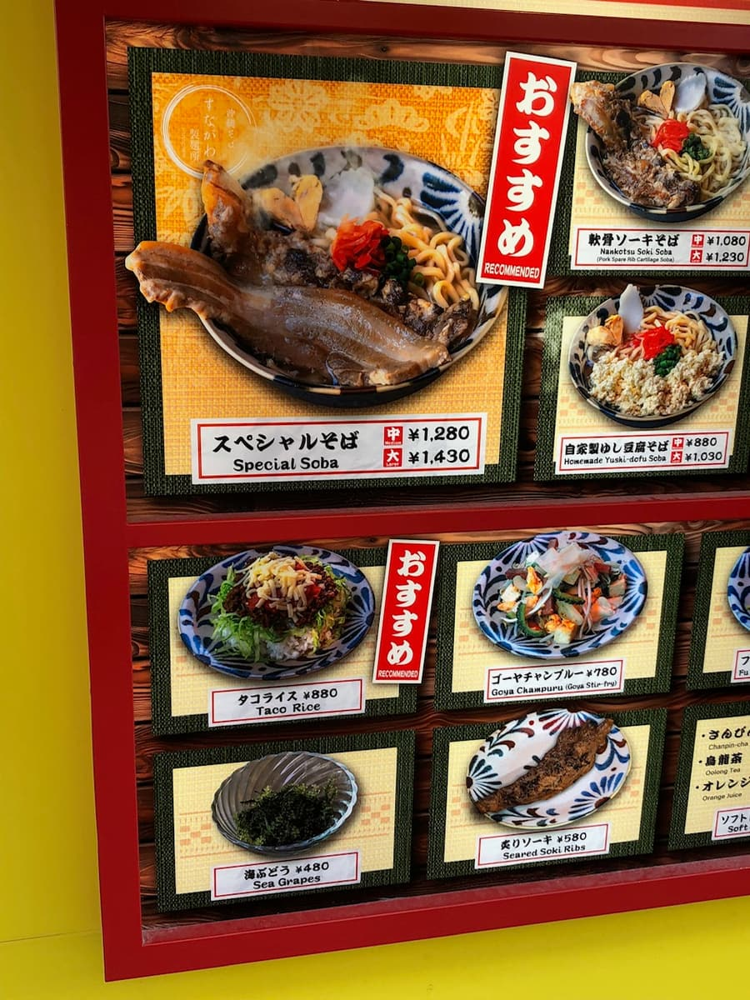
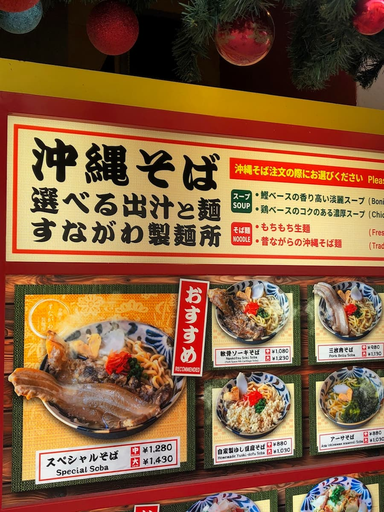
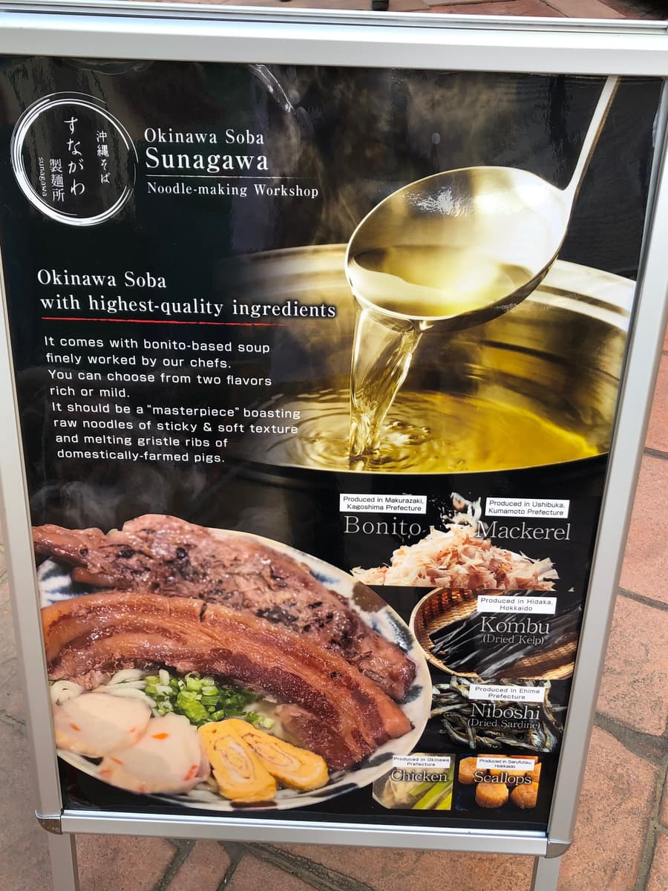
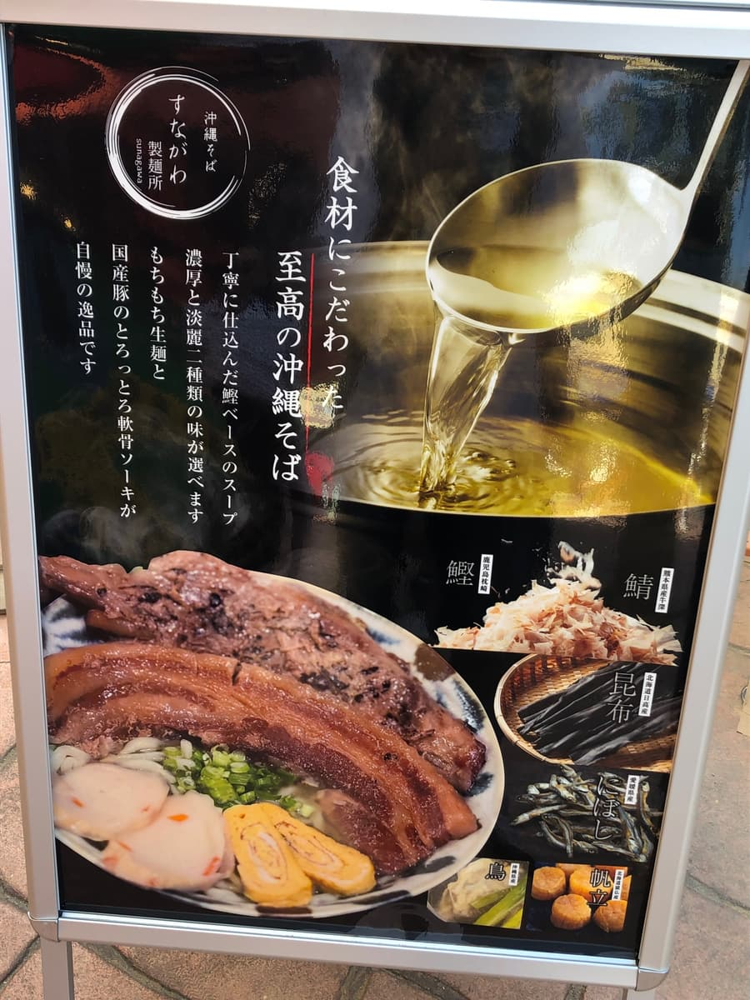
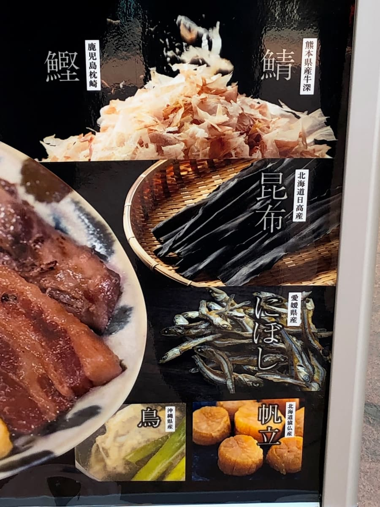
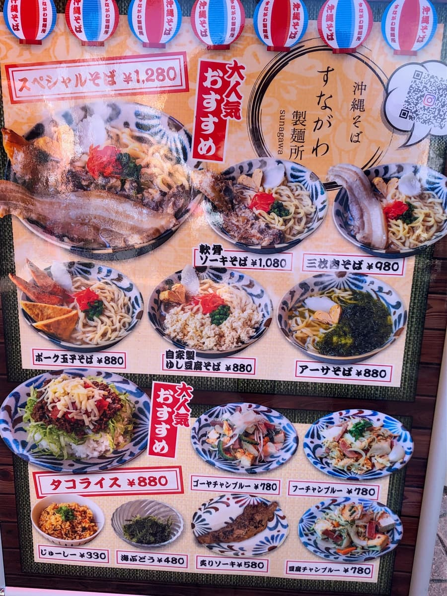
Looking at the menu, there are various kinds of Okinawa soba, and I decided to order the “special soba,” which was marked as recommended. The menu description says the broth is carefully made from ingredients such as bonito, kombu, dried sardines, mackerel, scallops, and chicken. This looks promising 🤗
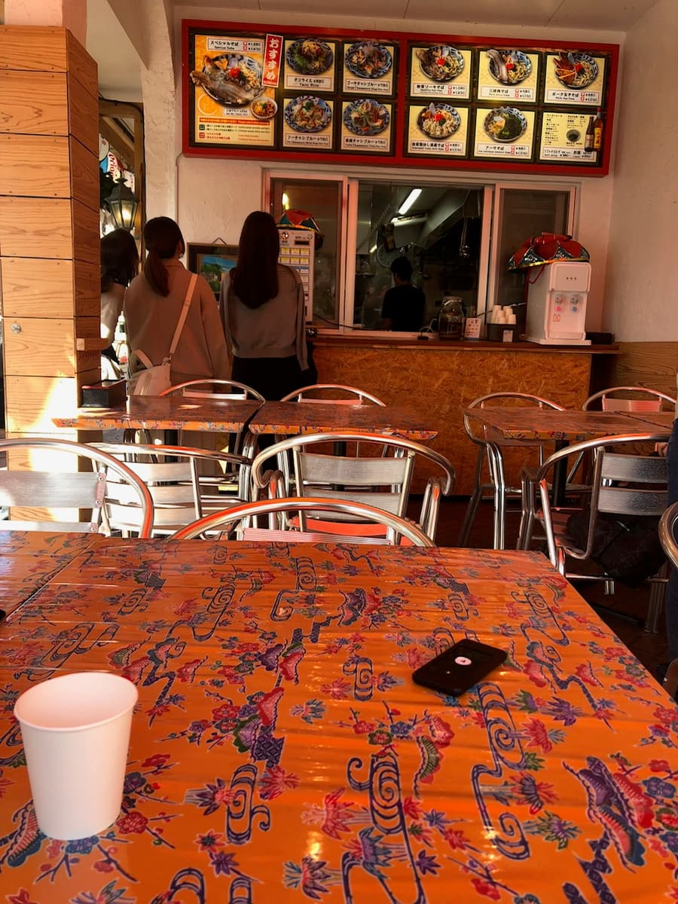
After waiting a while, the “special soba” was brought out. It looks like it has volume from the appearance alone. First, I tasted the soup, as is customary. As described, among combined broths it's a gentle taste with a bit of bonito coming through. On the sign it looked really delicious, but when I actually drank it, my impression was that it's an ordinary taste.
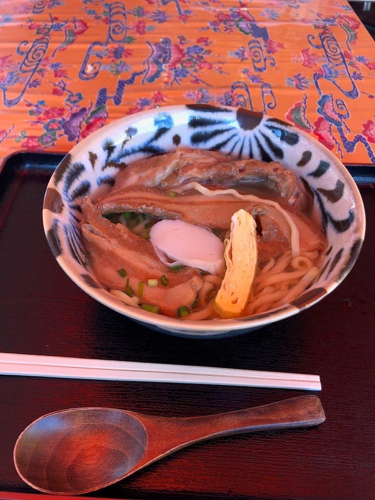
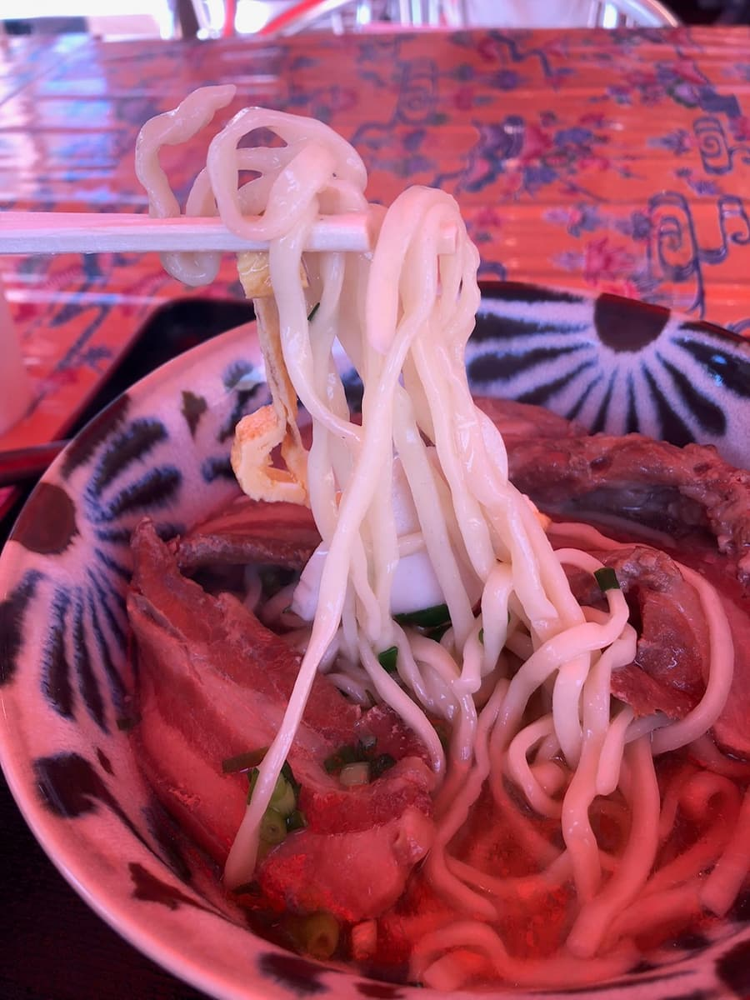
Next, I have the noodles. Medium-thick fresh noodles with a loose wave, and they're chewy. These are fairly delicious too. Not to the point of being especially moved, but I thought they were just plain delicious.
The toppings, braised pork belly (sanmai-niku) and soft-bone pork ribs (nankotsu soki), are cut long horizontally, and there are parts where a bit of sinewy texture remains, but basically they're finished melt-in-your-mouth tender. I'd say these are a standard taste too.
Given its good location, it seems to be a shop popular with tourists. If you're sightseeing around Mihama American Village, how about dropping by once 😊
Rating (9/15): I thought it was just plain delicious. Although there's nothing that particularly stands out, it's a shop where you can enjoy Okinawa soba of standard deliciousness. It's in American Village, so it's in a good place to drop by while sightseeing.
Noodles: ★★★☆☆（3）
Soup: ★★★☆☆（3）
Toppings: ★★★☆☆（3）